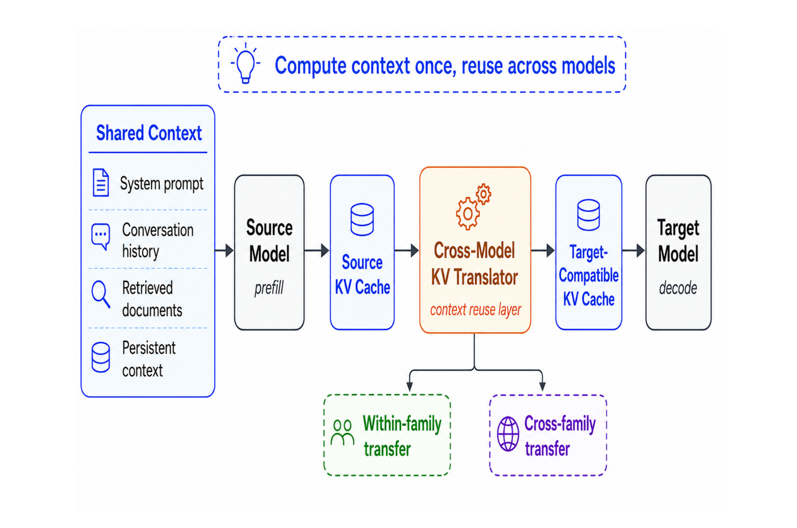
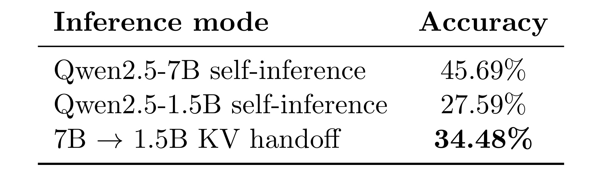
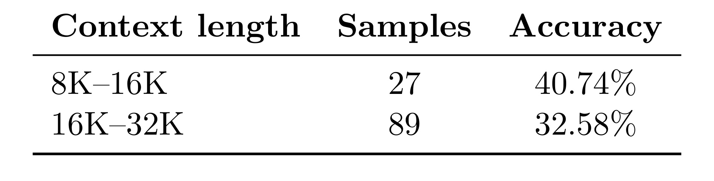
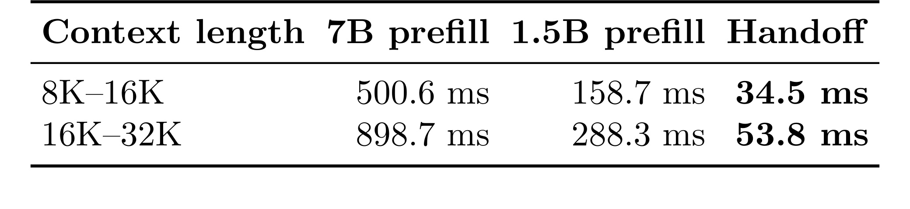
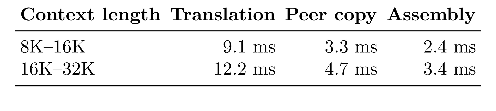
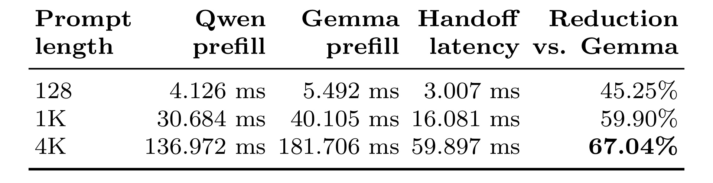
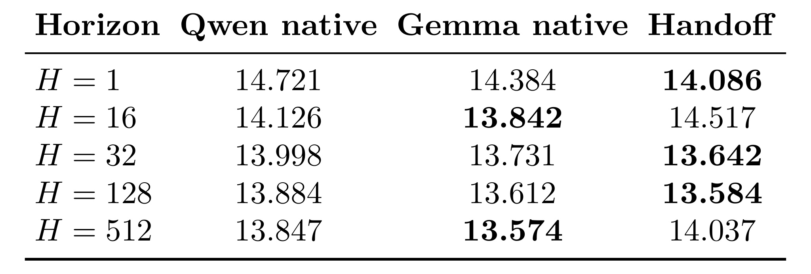
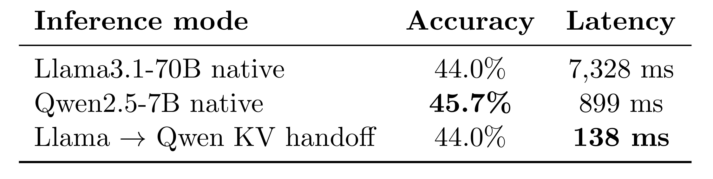

A Universal Context-Reuse Layer for Cross-Model KV Sharing
《面向跨模型 KV 共享的通用上下文复用层》由德州大学达拉斯分校的 Yi Li、Dongming Jiang、Yi Zhao 和 Bingzhe Li 完成，2026 年 8 月 31 日公开。论文关心的不是如何再压缩单个模型的 KV cache，而是能否把一个模型已完成的上下文计算转换成另一个模型可消费的 KV 状态。论文入口为 arXiv:2608.30963；本轮核验到作者提供了演示视频，但未核验到独立代码仓库或可复现的训练配置。
当多个异构模型反复处理同一段对话、检索文档或用户提示时，每个模型仍要独立执行 prefill；现有 KV 复用又通常要求缓存生产者与消费者是同一模型。模型规模、架构、注意力配置、分词器和家族的差异，使这些已经支付过的上下文计算无法直接跨模型流动。
1. 背景和问题
大模型服务正在从“一次请求调用一个模型”转向异构编排。模型路由会根据难度、成本或延迟选择不同尺寸的模型；级联系统先让小模型尝试，失败后再升级给大模型；多 Agent 应用让规划、检索、执行和验证模型共享用户历史与工具结果。这些系统的逻辑上下文往往高度重合，但实际执行时，新模型仍会从原始 token 重新开始。所以，系统在信息层面是“共享上下文”，在计算层面却是“重复理解上下文”。
prefill 是这一重复成本的集中体现。对长度为 $L$ 的输入，论文先将上下文写成：
符号解释：$C$ 是完整输入上下文，$x_i$ 是第 $i$ 个 token，$L$ 是 token 总数。在 prefill 中，每层 Transformer 都要为所有 token 构建 key 和 value，这一过程同时涉及矩阵计算、注意力、显存读写和分布式通信。上下文越长、模型越大，生成首个输出 token 前的固定开销就越显著。
对模型 $M$ 而言，prefill 的可复用产物是逐层 KV 状态集合：
符号解释：$N$ 是模型的 Transformer 层数，$K^{(n)}$ 和 $V^{(n)}$ 分别是第 $n$ 层已处理 token 的 key/value 状态。自回归解码可以重用这些状态，不必每生成一个 token 就重算整段前缀。现有 prefix caching、分页 KV 管理、cache 卸载与感知缓存的调度都在利用这一特性，但它们大多保持了一个假设：生产 cache 的模型，也是后来消费 cache 的模型。
近年工作已经逐步放宽这个边界。CacheBlend 允许把独立缓存的文本块组合到新上下文，并对受跨块注意力影响大的 token 进行部分重算；KVCOMM 针对多 Agent 的前缀差异，使用键点估计并修正上下文导致的 KV 偏移；SwiftCache 处理缓存在异构硬件之间的存放和运输。它们说明 cache 可以跨上下文或跨设备移动，但表示本身仍然属于同一个模型。
更接近本文的 DroidSpeak 支持相同架构下的微调变体，通过识别仍兼容的层并只重算差异大的层来完成共享；Heo 等人在同一模型家族内学习不同尺寸之间的闭式线性映射；Mixture-of-Translators 则把异构家族之间的 KV 转换建模为多翻译器的学习问题。本文所处的位置，是将“同模型缓存”进一步提升成“跨模型上下文复用层”，并同时用同家族、同规模跨家族、大到小跨家族三种设定验证可行性。
问题的难点不是改变 tensor 形状。两个模型可能使用不同层数、hidden dimension、KV head 数、attention 配置、tokenizer 和训练语料，即使输入表达相同语义，它们也会在不同坐标系中组织语义关系。因此，跨模型 KV sharing 的实质是一个“保留下游有用性的状态翻译”问题。如果成功，模型路由、Agent 接力、长对话验证与多模型推荐系统都可以将已算过的上下文视为一种可传递的计算资产，而不只是当前进程里的临时缓存。
这个问题与传统模型蒸馏也不同。蒸馏通常把大模型的输出分布、中间表示或偏好离线写入小模型参数，部署后教师状态不再出现；本文则在每个具体请求上搬运已计算的动态上下文，transport 是在线数据路径的一部分。这使它更适合经常变化的用户历史、RAG 证据和 Agent 工具输出，也引入了蒸馏不必直面的运行时问题：cache 必须与正确的请求和模型版本绑定，跨设备传输要有带宽预算，模型升级后旧 transport 可能失效，而且携带用户上下文的内部状态仍需要权限与隔离。因此，论文提出的并非单一算子，而是一个需要与调度、存储和安全联动的服务层边界。
2. 方法
2.1 从重复 prefill 到上下文可移动性
论文从一个串联的异构工作流出发，共享上下文 $C$ 依次被三个模型使用：
符号解释：$M_1$、$M_2$、$M_3$ 可以对应小模型初答、大模型升级和验证模型，也可以是规划、执行、批评三个 Agent。箭头只表示计算流的依赖次序，不表示它们具有相同的参数或架构；关键约束是它们看到的逻辑上下文大部分相同，因此重复 prefill 是可被复用层捕获的应用级冗余。
在原生执行路径中，每个模型都会从 $C$ 独立构建自己的 KV：
符号解释：$\operatorname{Prefill}(M_i,C)$ 表示模型 $M_i$ 对整段 $C$ 进行前向计算并生成所有层的 KV cache。原文将三个模型分别展开，这里用索引 $i$ 合并为一式；它保留了“逻辑内容共享，但计算表示相互独立”的问题本质。
当参与模型扩展到 $N$ 个时，所有 native prefill 的总成本是：
符号解释：$C_{\mathrm{native}}$ 是应用级的总 prefill 成本，$C_{\mathrm{prefill}}(M_i,C)$ 是第 $i$ 个模型处理上下文 $C$ 的成本，$N$ 是使用该上下文的模型数。这个式子显示出两个放大器：长上下文会增加单项成本，而多模型会增加求和项数。本文的核心改变，就是不再让新模型总是从 raw tokens 开始，而是先查询是否已存在可翻译的上下文状态。

Figure 1 把这一改变画成了完整的运行时路径。左侧 shared context 可包含 system prompt、对话历史、检索文档和持久上下文；源模型先执行 prefill，把已支付的计算沉淀为 source KV cache。中间的 Cross-Model KV Translator 是上下文复用层，它不生成新文本，而是把源模型的内部状态投影到目标可消费的表示空间。目标模型收到翻译后的 cache 就直接 decode，从而跳过完整目标 prefill。图底部将翻译分为 within-family 和 cross-family 两种，提醒我们“同尺寸映射”与“异架构对齐”的难度并不相同。这张图也揭示了一个使用前提：源 cache 必须因为上游任务本来就需要而已经存在，否则单独为传输去跑一次源 prefill，可能会把节省的成本再花回去。
2.2 源 KV 到目标可消费状态的翻译
跨模型复用的最小接口，是将源模型 $A$ 的 cache 映射到目标模型 $B$ 的表示空间：
符号解释：$\mathrm{KV}_A(C)$ 是源模型已经为 $C$ 计算好的逐层 key/value，$T_{A\rightarrow B}$ 是针对源-目标对的翻译函数，$\widehat{\mathrm{KV}}_B(C)$ 是目标模型可以装配后继续解码的近似状态。该函数需要处理层数、head 数、表示维度、attention 组织方式与 tokenizer 等差异，所以不能被理解为 reshape 或类型转换。
符号解释：$\mathrm{KV}_B(C)$ 是目标模型 native prefill 的真实 cache，左侧的帽号表示翻译近似。不等式不是容忍错误的借口，而是把优化目标从“还原每一个内部数值”转向“保留目标解码需要的上下文信息”。如果两组 KV 在欧式距离上不同，但导致相近的 attention、logits 和任务预测，那么传输对系统仍是有用的。这也意味着仅看 KV 重建误差不足以判断传输是否成功，必须连同下游质量一起验收。
2.3 翻译层的训练目标与行为兼容性
符号解释：$T_\theta$ 是带参数 $\theta$ 的 transport module，输入是源模型的层级 KV 状态，输出是与目标模型解码接口兼容的状态。论文提出它可以作用于单层、层组、单个 KV head、共享中间表示、压缩表示或低维 adapter，但这是可选设计空间，不是已被逐项实验比较的具体实现。
符号解释：$\mathcal{L}_{\mathrm{KV}}$ 是 transport module 的表示对齐损失，$D(\cdot,\cdot)$ 是某种表示距离，$\mathrm{KV}_B(C)$ 是由冻结目标模型运行 native prefill 得到的监督。优化这个目标需要在训练期同时获得源和目标 cache，但在线推理时只留下 $T_\theta$ 的前向计算，目标 LLM 参数保持冻结。作者同时提醒，原始 KV 距离可能与任务质量不一致，因此也可以考虑对齐 attention 行为、logits 或任务准确率。
这里需要把“方法思想”和“可复现算法”区分开。论文没有公开 $T_\theta$ 的具体网络结构、层或 head 的配对规则、tokenizer 对齐方法、$D$ 的精确定义、损失权重、训练样本量、optimizer 和硬件预算。它展示了“学习 transport 并让目标直接 decode”的接口与结果，但没有把 transport 实现展开到读者可以无歧义复现的程度。所以本笔记不对其隐藏结构做猜测，只根据原文明示的接口、目标和实验结果分析。
2.4 运行时接入、成本门控与回退
训练好源-目标 transport 之后，运行时路径包含三个额外步骤：对已有源 cache 执行翻译，把翻译结果传到目标设备或进程，按目标推理引擎需要的层/head/内存布局组装 cache。只有这三部分的代价低于重做目标 prefill，优化才在成本上成立：
符号解释：$C_{\mathrm{trans}}$ 是 transport 前向计算成本，$C_{\mathrm{overhead}}$ 包含 peer-to-peer copy、cache assembly、同步与运行时集成开销，$C_{\mathrm{prefill}}$ 是目标模型重新处理整段上下文的成本。它是启用复用的必要条件，但不是充分条件；运行时还必须检查该源-目标对的质量是否达到业务阈值，并在无可用 transport、延迟不划算或质量不过线时回退 native prefill。
这一门控对推荐和搜索系统尤其重要。例如，一个大模型先对长商品详情、用户对话和检索证据做内容理解，后续的小模型用于低延迟候选重排或安全验证，那么源 cache 属于已发生成本，跨模型传输可能有效。但如果只为了让小模型解码而额外启动大模型 prefill，那么公式的左侧并未计入新增源计算，结论就不能直接套用。因此，更精确的定位是“对已有源状态的增量复用”，而非任意请求的端到端加速器。
3. 实验结果
3.1 实验设置与计时口径
论文依次提高源-目标异构程度。同家族设置以 Qwen2.5-7B-Instruct 为源、Qwen2.5-1.5B-Instruct 为目标，将规模差异与家族差异分开；可比规模跨家族设置使用 Qwen2.5-1.5B-Instruct 到 Gemma-2-2B-IT；最强异构设置使用 Llama3.1-70B 到 Qwen2.5-7B，同时引入家族变化和 10 倍参数差。三组都保持目标 LLM 冻结，源模型先产生 native cache，transport module 转换后由目标直接 decode。
同家族 transport 在 NoLiMa 提示上训练，评估使用 116 个计分的 LongBench2 样本，对 A/B/C/D 选项以 log-probability 打分得到准确率，并按 8K–16K 与 16K–32K 两个上下文桶拆分。同家族延迟每个桶只测三个样本，另外仪器化统计 translation、peer copy 和 cache assembly。Qwen-to-Gemma 使用 FineWeb-Edu 抽样文本，比较 128、1K、4K token 下的延迟，并以解码地平线评估困惑度：
符号解释：$H$ 是从翻译后初始状态出发，目标模型继续解码的 token 步数。$H=1$ 最直接地检验转换状态能否支撑首个目标步，更大的 $H$ 则检验初始差异是否被后续 native target 计算放大、吸收或呈现非单调波动。所有 handoff 延迟都是“源 cache 已经可用”之后的增量成本，不包含源 prefill，不应与从空请求开始的完整延迟混淆。
3.2 同家族传输：准确率与长上下文退化
首先看总体 LongBench2 准确率。native Qwen2.5-7B 是 45.69%，native Qwen2.5-1.5B 只有 27.59%，而把 7B cache 翻译给冻结 1.5B 后达到 34.48%。

Table 1 的关键不只是 handoff 比小模型 native 高 6.89 个百分点，而是目标模型参数没有更新。因此改善只能来自翻译 KV 携带的上下文信息，这给“KV 是可转移计算表示”提供了直接证据。但 34.48% 仍显著低于 7B 的 45.69%，说明传输不能让 1.5B 拥有 7B 的完整解码能力。按作者的算法，handoff 只回收了 native 1.5B 与 7B 之间准确率差距的 38.1%，它更像一种携带“大模型已理解过上下文”信息的暖启动，而非容量替代。表中三个对照缺一不可：它们同时限定了传输的收益与上界。
然后看上下文长度分桶。8K–16K 桶有 27 个样本，handoff 准确率 40.74%；16K–32K 桶有 89 个样本，准确率降为 32.58%。

Table 2 显示较长桶低 8.16 个百分点，这是全文最清晰的质量边界之一。一种合理解释是，上下文越长，transport 越需要保留更多跨 token、跨层和长距注意关系，任何局部对齐误差都可能累积。但这一判断只能作为机理猜想，表格本身还有分桶样本不均衡的混淆：长桶 89 个，短桶仅 27 个，题目难度分布未必一致。此外，表格未报告 native 1.5B 在两个长度桶上的对应准确率，因此无法判断 8.16 个百分点中有多少是数据难度变化，有多少是 transport 随长度恶化。表格也未给出误差条，两个单点差值不能被解读为稳定的缩放定律。要确认是纯粹的长度效应，还需要控制任务类型、在更细粒度长度上画曲线，并给出置信区间。
3.3 同家族效率：端到端延迟与组件拆分
同家族效率比较对每个长度桶分别计时 7B prefill、1.5B prefill 和已有 7B cache 之后的 handoff。

Table 3 中，8K–16K 上下文的 handoff 为 34.5 ms，相比 1.5B native prefill 的 158.7 ms 减少到约 $1/4.6$，相比 7B 的 500.6 ms 减少到约 $1/14.5$。16K–32K 上下文的 handoff 为 53.8 ms，相比 1.5B 的 288.3 ms 约快 5.4 倍，相比 7B 的 898.7 ms 约快 16.7 倍。随着长度从前一桶增加到后一桶，目标 prefill 延迟增加 129.6 ms，handoff 只增加 19.3 ms，这与“避免重跑长 prompt 的主干计算”目标一致。不过每桶只有三个计时样本，这些比例是初步测量，不是大规模负载下的尾延迟结论。
为看清 handoff 内部花在哪里，作者又分别仪器化了翻译、peer copy 与 cache assembly。

Table 4 中，8K–16K 桶的三个组件分别是 9.1、3.3、2.4 ms，合计 14.8 ms；16K–32K 桶分别是 12.2、4.7、3.4 ms，合计 20.3 ms。一方面，translation 本身只占 native target prefill 的小部分，说明“学习映射会不会比重算更贵”在这两个长度桶中得到了正面回答。另一方面，14.8 ms 与端到端 34.5 ms 之间还有 19.7 ms 没有归因，20.3 ms 与 53.8 ms 之间还有 33.5 ms 没有归因。未归因部分在两个桶中都大于已列出组件之和，因此真正的工程优化点很可能在同步、运行时调度、内存分配或其他集成路径，而不只是继续压缩 transport 网络。这个差额应成为后续性能分析的首要对账项。
3.4 跨家族传输：Qwen-to-Gemma 的延迟与困惑度
Qwen2.5-1.5B 到 Gemma-2-2B 保持了近似参数规模，但改变了模型家族，所以它主要检验表示与架构差异。延迟从 128 token 一直测到 4K token。

Table 5 显示，128 token 时 Gemma native prefill 为 5.492 ms，handoff 为 3.007 ms，减少 45.25%；1K token 时从 40.105 ms 降到 16.081 ms，减少 59.90%；4K token 时从 181.706 ms 降到 59.897 ms，表中给出 67.04% 的降幅。摘要将该数据四舍五入写为“最高 67.05%”，两者只是小数位口径差异。结果的趋势比单点最大值更重要：handoff 仍随长度增长，但相对 native prefill 的优势扩大，说明 transport 并没有重现目标模型处理全 prompt 的同等增长路径。然而最长只到 4K，它不能替代对 32K 乃至更长上下文的跨家族验证。
效率不足以说明状态可用，因此作者比较了 Qwen native、Gemma native 和 handoff 在五个解码地平线上的困惑度，数值越低越好。

Table 6 给出了一个非单调结果。$H=1$ 时 handoff 为 14.086，低于 Qwen native 的 14.721 和 Gemma native 的 14.384，说明转换状态在目标第一步就可用；$H=32$ 和 $H=128$ 时 handoff 也以 13.642 和 13.584 略低于两个 native 对照。但 $H=16$ 时 handoff 为 14.517，高于 Gemma 的 13.842；$H=512$ 时 handoff 为 14.037，与 Gemma 的 13.574 相差 0.463，是相对目标 native 的最大差距。因此不能将“某些地平线上更低”简化为“handoff 提升了 Gemma”：翻译初始状态与后续目标计算的交互会随解码深度波动，而且本表没有方差、置信区间或不同文本类型的分组。
3.5 大到小跨家族传输：Llama-to-Qwen
最后一组设定将 Llama3.1-70B 的 cache 翻译给 Qwen2.5-7B，源模型参数量约是目标的 10 倍，同时更换模型家族。这比 Qwen-to-Gemma 更接近“强模型处理长上下文，小模型快速接力”的级联场景。

Table 7 中，native Llama 准确率 44.0%、延迟 7,328 ms，native Qwen 准确率 45.7%、延迟 899 ms，Llama-to-Qwen handoff 准确率 44.0%、延迟 138 ms。以 native Qwen 为质量上界对照，handoff 只低 1.7 个百分点，保留了 96.3% 的目标 native 准确率；以增量延迟看，138 ms 相比 899 ms 约快 6.5 倍，相比 7,328 ms 约快 53.1 倍。值得注意的是，native Llama 本身准确率也只有 44.0%，所以 handoff 与源模型相同并不意味着它获得了某种超越目标的能力；更稳妥的结论是，在这个任务上，异构 transport 把足以支持 44.0% 准确率的上下文状态交给了冻结 Qwen，而没有让 Qwen 重做完整 prefill。
3.6 证据边界
这篇 12 页论文没有附录，也没有典型的方法消融。它没有比较线性、非线性、逐层、逐 head 或低维 adapter，没有拆分 KV 距离、logit 对齐与任务目标，也没有测试 transport 是否能迁移到训练时未见的源-目标对。因此当天无法报告“最重要消融项”；更准确的说法是，本文最大的实验缺口正是缺少对翻译层结构和损失的消融，它证明了结果可能成立，却没有说清哪一个设计选择产生了结果。
评估覆盖也仍较窄：LongBench2 只有 116 个计分样本，同家族延迟每桶只三个样本；Qwen-to-Gemma 使用 FineWeb-Edu 文本的困惑度，但未报告具体文本数、分组或置信区间；Llama-to-Qwen 表格未在当页说明任务样本数。论文还没有统计 cache 大小、峰值显存、跨机网络带宽、并发吞吐、P95/P99 延迟和在线生产负载。作为可行性证据，三种配对很有价值；作为可部署的“通用层”证明，当前数据还不足。
4. 总结
4.1 我的判断
这篇论文最值得保留的不是某个单点加速数字，而是“上下文可移动性”这一系统接口：已经进入模型内部的上下文，可以在质量可控和成本有利时被存储、搬运、翻译并由另一个模型继续消费。Qwen 7B-to-1.5B 在冻结目标上增加 6.89 个百分点、Qwen-to-Gemma 在 4K 上减少约 67% 目标 prefill、Llama-to-Qwen 以 138 ms 达到 44.0% 准确率，共同说明 KV 并非完全无法跨越模型边界。但“通用”仍是研究目标而非已充分实证的性质，因为当前只测了三个定向配对，且每个配对仍需要专门 transport。
4.2 工程迁移启发
对多 Agent 和模型路由，最直接的落地方式是维护一张带成本与质量统计的 source-to-target transport 图，只对已存在源 cache、prompt 足够长、翻译延迟受益明确的边启用复用，并保留 native prefill 回退。对推荐系统，可以优先审视计算昂贵的内容理解、长对话推荐和多阶段生成式重排：如果大模型已处理用户历史与候选证据，可以评估是否将其状态交给低延迟的校验、解释或安全模型。这类探索必须把排序质量、首 token 延迟、显存和传输带宽放在同一个目标中，而不能只优化 KV 距离。
复现时建议先选同家族小尺寸配对，使用一个可控的长上下文任务，同时记录 native source、native target、handoff 三条路径的准确率、perplexity、端到端延迟和显存。transport 的组件时间必须能与端到端相互对账，未归因时间要单独暴露；另外需要分别报告“源 cache 本来就存在”和“为传输现场生成源 cache”的两种口径，避免把增量优化写成完整请求加速。
4.3 局限与后续跟进
当前至少有六个边界。第一，transport module 结构、损失定义和训练资源未公开到可复现程度。第二，源-目标只有三组，没有未见模型或新 tokenizer 上的泛化。第三，LongBench2 样本较少且长度桶不均衡，计时每桶只有三个样本。第四，没有 transport 结构、对齐目标或层/head 选择的消融，无法确定收益来源。第五，handoff 口径不含源 prefill，不能直接推导新请求的端到端节省。第六，并发吞吐、尾延迟、内存占用、跨机带宽、隐私边界和在线故障回退都尚未验证。
后续最值得跟进的三项工作是：一，等待代码或更完整版本，核验 transport 的精确架构、训练集与对齐损失，否则当前结果难以独立复现；二，以相同任务和计时环境比较闭式线性映射、Mixture-of-Translators 与本文方案，分离“接口概念”和“具体翻译器”的贡献；三，在真实模型路由或多 Agent 负载上做端到端实验，让源 cache 由上游任务自然产生，同时记录命中率、传输距离、P95/P99 延迟、显存和质量回退比例。只有这些证据补齐后，“context mobility”才能从可行性概念走向可管理的服务系统抽象。